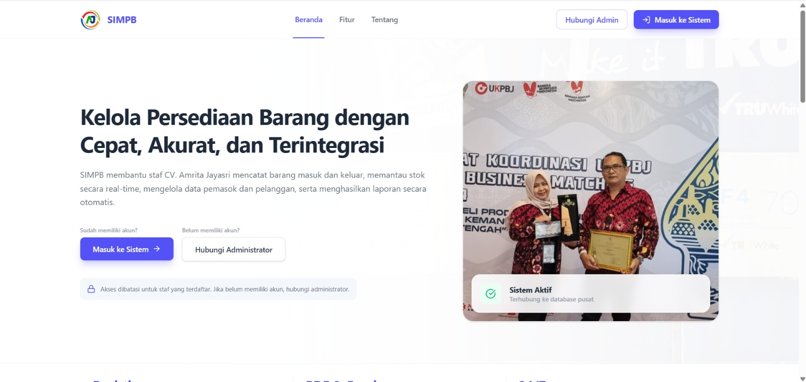
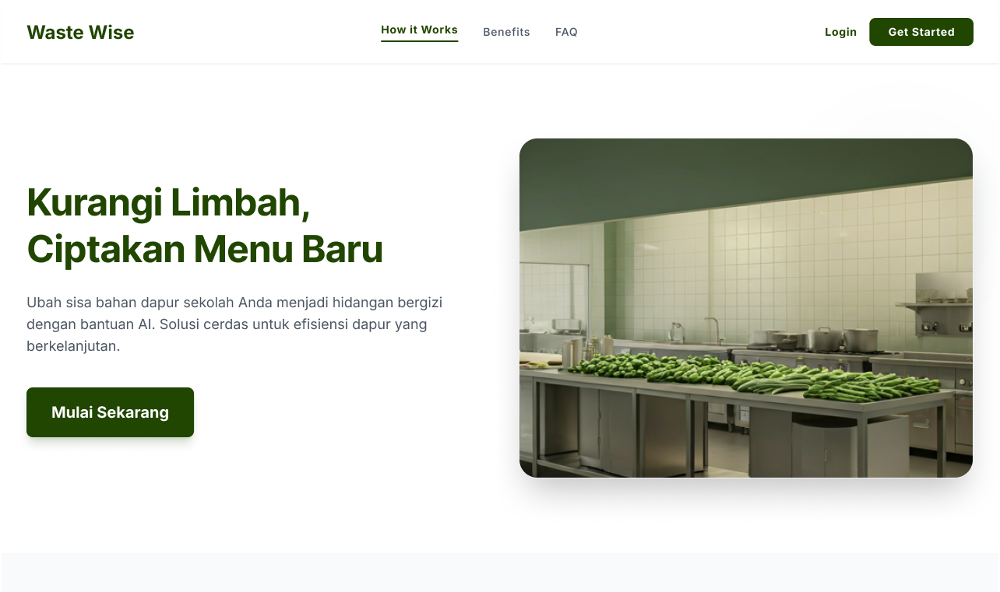
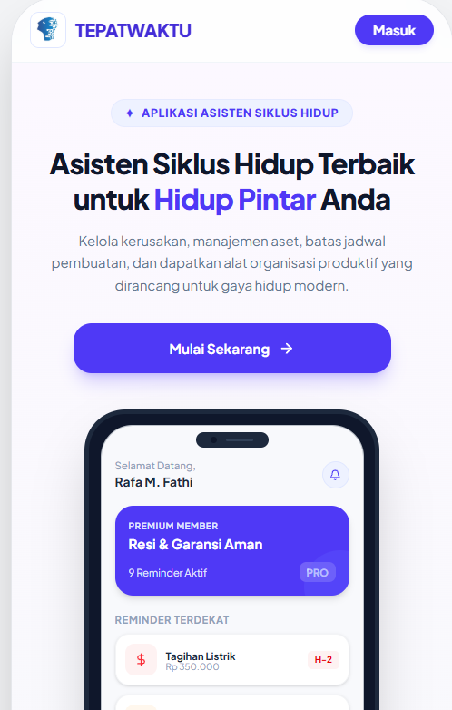

Hello, I'm Fajar Budiawan
Frontend Developer
Saya adalah mahasiswa yang sedang belajar Frontend Development menggunakan HTML, CSS, JavaScript, dan React.
See My Projects
Saya adalah mahasiswa yang sedang belajar Frontend Development menggunakan HTML, CSS, JavaScript, dan React.
See My Projects
Frontend Developer enthusiast dengan keahlian di bidang React, JavaScript, HTML, dan CSS. Berfokus pada pengembangan antarmuka web yang responsif, interaktif, dan berorientasi pada pengguna. Antusias dalam mempelajari teknologi baru serta memiliki kemampuan kolaborasi tim yang baik

Sistem Informasi Manajemen Pengadaan Barang berbasis web yang dikembangkan untuk CV Amrita guna mendigitalisasi proses pencatatan stok, transaksi barang masuk-keluar, serta monitoring persediaan secara otomatis dan real-time

Mengembangkan aplikasi berbasis web 'Waste Wise' yang mengintegrasikan AI untuk memberikan rekomendasi resep masakan berdasarkan sisa bahan pangan pengguna guna meminimalisir limbah makanan dan mendukung gaya hidup berkelanjutan

Mengembangkan 'Ingetin', sebuah platform PWA all-in-one yang terintegrasi dengan notifikasi WhatsApp otomatis untuk membantu pengguna mengelola jadwal pembayaran pajak, tagihan rutin, dan perawatan aset secara terpusat guna menghindari denda serta keterlambatan.
Silakan hubungi saya melalui media berikut.